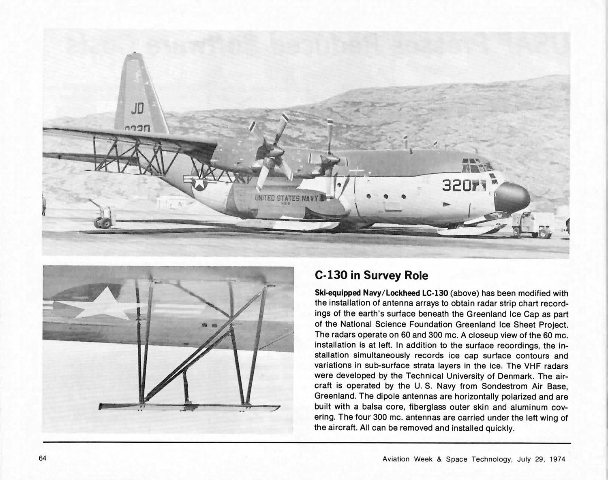
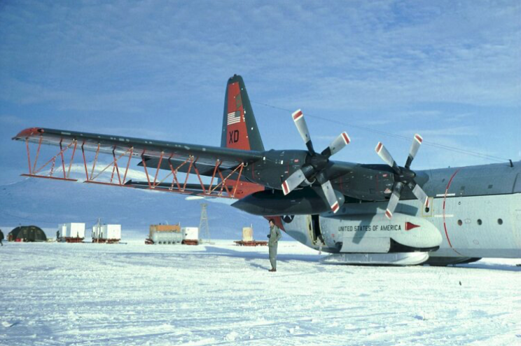
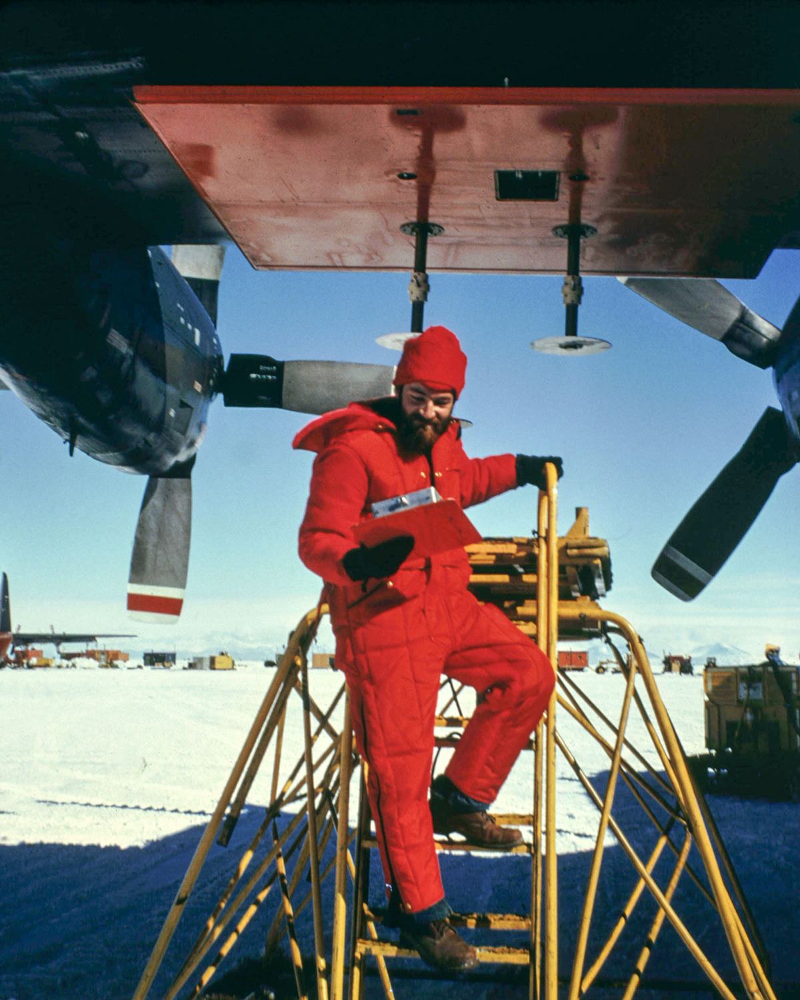
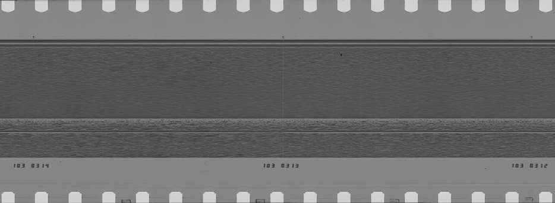
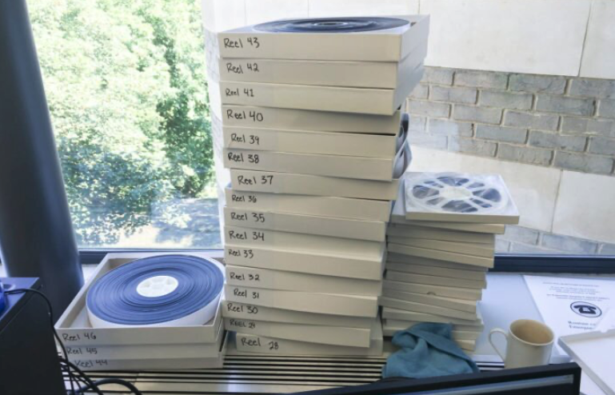
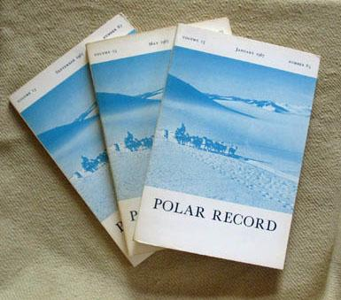

Executive Summary
Frozen Legacies represents an unprecedented investigation of Antarctica's Ross Ice Shelf, combining newly digitized 1970s radar film with modern airborne surveys to provide the first direct measurements of ice shelf changes over nearly half a century.
This collaborative initiative between Georgia Tech, Stanford, and Colorado School of Mines addresses critical knowledge gaps in ice shelf evolution. By processing, calibrating, and analyzing over 400,000 line-kilometers of historical radar data, we directly compare subsurface conditions with modern observations from NASA Operation IceBridge, NSF CReSIS, and ROSETTA-Ice.
Why does it matter? The Ross Ice Shelf buttresses glaciers that could raise global sea levels by 11.6 meters if lost. Understanding its long-term behavior is crucial for climate projections and coastal planning worldwide.
Explore the pioneering fieldwork and aircraft that made this research possible.





